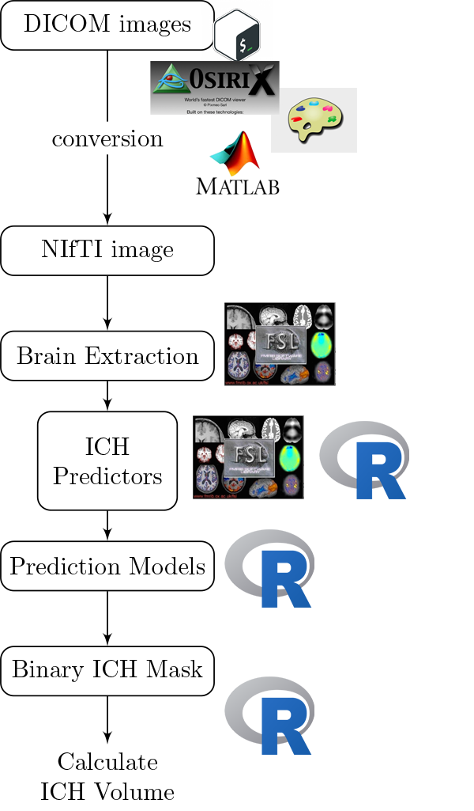

2017-04-10
Neuroconductor: Why
Workflow for the Analysis
Multiple pieces of software used
- all different syntax

It's typical to have lots of software choices

From Carp, Joshua. "The secret lives of experiments: methods reporting in the fMRI literature." Neuroimage 63.1 (2012): 289-300.
 What:
What:
An R Platform for
Medical Imaging Analysis
Goal:
Lower the bar to entry
- all R code
- pipeline tool
- "native" R code
Complete pipeline
- preprocessing and analysis

Current Progress (my R packages)
Number of downloads as of April 10, 2017 (cranlogs package):

Goal:
Centralize the packages
- Medical Imaging Task View
- no tutorials
- Neuroconductor Repository

Neuroconductor Goal:
Detailed tutorials on how to actually perform an analysis

How:
Provide package checks / rules / stability
- check against other imaging software (e.g. FSL)
How: Website
- Tutorials in RMarkdown
- Adi Gherman made a lot of the website: https://neuroconductor.org/
- Also programmed most of the current backend
- Development version of the backend exists (all R): https://github.com/muschellij2/neuro_backend
git2r,gh,travisci, anddevtoolspackages
 Neuroconductor Downsides
Neuroconductor Downsides
- More control over the workflow = more work
- Users need external software (versions/installation)
- No control over external software
- if maintainer changes something, not much recourse
- Need the content (buy-in from the community)
Try it out
A short course we made with Neuroconductor packages: http://johnmuschelli.com/imaging_in_r/
How to set up http://johnmuschelli.com/imaging_in_r/installing_everything_locally/